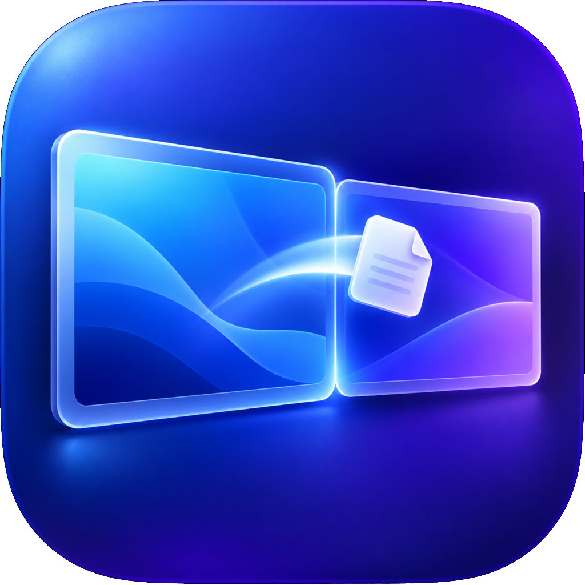

01
A real second display.
macOS treats the extended space as a genuine monitor. It has its own menu bar, supports full-screen apps, and keeps window positions where you leave them.

DesktopExtend View on GitHubA MORE EXPANSIVE MAC
DesktopExtend gives your Mac a genuine second desktop, without a second display. Push past the edge of your screen and keep working in the space beyond it.
Built for macOS
Open source
SPACE THAT FEELS NATIVE
Your second desktop behaves like a real display, not a temporary workspace. Keep it close when you need it and out of sight when you do not.
01
macOS treats the extended space as a genuine monitor. It has its own menu bar, supports full-screen apps, and keeps window positions where you leave them.
02
Move your cursor beyond the left or right side of the screen. The view smoothly follows, revealing your additional desktop.
03
Use the panel you already have. DesktopExtend creates room for reference material, messages, and focused work without another screen on your desk.
THE NATURAL WAY TO EXPAND
DesktopExtend is a calmer alternative to managing virtual spaces or making room for another physical display. It gives your existing screen another place to work.
MADE FOR THE WAY YOU WORK